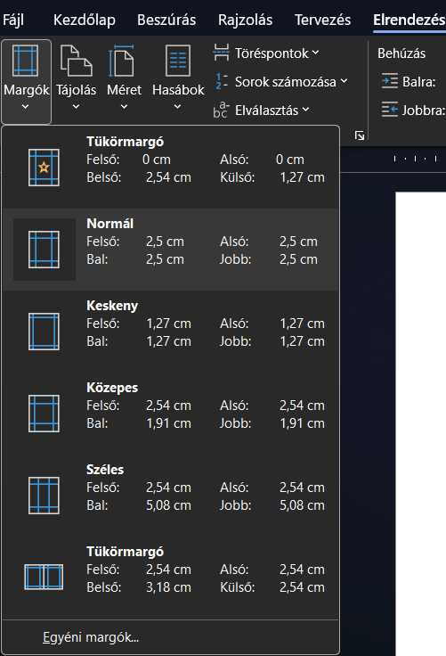
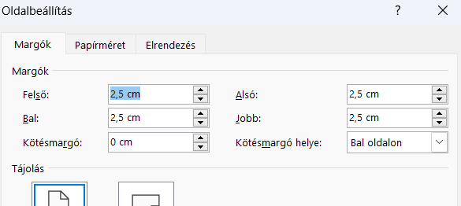

Ebben a dokumentumban önálló munkához találsz feladatokat. Sorban haladj, mert úgy növekszik a nehézség! A pirossal szedett, aláhúzott szövegrészletek a feladatokhoz tartozó segédletekre mutatnak. Ne felejtsd el minden lépés után menteni a munkádat! A végén a Fájlkezelőben másold le, majd illeszd be a Beadott (X:) megosztott meghajtóra!
Újdonság, hogy követheted a hzaladásodat. Minden részfeladat mellett találsz egy jelölőt, amit bepipálhatsz, hogy lásd, azt már megcsináltad. Ha használod, a leírás alján egy progress baron láthatod, hogy hol jársz.
Másold ki a fenti szöveget! Használhatod a Másolás gombot is a szöveg fölött. Nyisd meg a Wordöt, hozz létre egy új üres dokumentumot, és illeszd be a kimásolt szöveget!
A fájlt mentsd el a saját mappádba (bejelentkezesi.felhasznaloneved (H:)) A mesterséges intelligencia saját neved néven!
Mindenképp legyen benne a neved a fájlnévben, különben nem tudom, kié, és nem tudok elégtelentől eltérő értékelést adni.
Állítsd be a dokumentumban a bal margót 3 cm-esre, a többit jobb, alsó, felső) pedig 2-2 cm-re. Mivel ilyen nem volt az összefoglaláskor, ehhez részletes leírást kapsz, és még egy kis segítséget.

Elrendezés fülre, majd bal oldalon a Margók gombra. Válaszd az Egyéni margók... opciót">
felső beállítással kezded, a 2 után pedig egy tabulátorral mész a következő margóra.">Kapcsold be az automatikus elválasztást a dokumentumban.
Ehhez a beállításhoz nem kell kijelölnöd semmit, alapbeállítás szerint a teljes dokumentumra érvényes.
A Stílusok közt módosítsd a Normál stílust. Legyen a betűtípusa Times New Roman, a mérete 12 pont, az igazítása sorkizárt, a sorköze pedig 1,15-szörös.
A Stílusok közt módosítsd a Címsor 1 stílust. Legyen a betűtípusa Times New Roman, legyen félkövér, a mérete legyen 18 pont, igazítsd középre, a színe legyen valamilyen bordó, a térköze pedig legyen előtte és utána is 12 pontos.
A Stílusok közt módosítsd a Címsor 2 stílust. Legyen a betűtípusa Times New Roman, a mérete 14 pont, igazítsd balra, a színe pedig ennek is valamilyen (MÁSMILYEN!) bordó.
Amiről nincs szó egy ilyen feladatban, azzal nem kell foglalkozni. Például a Címsor 2 stílus térközét nem kell módosítani.
Címsor 1 stílussal a dokumentum címét formázzuk. Jelöld ki a legelső sort (A mesterseges intelligencia világa), és alkalmazd rá a Címsor 1 stílust.
Címsor 2 stílussal a dokumentum alcímeit formázzuk. Jelöld ki a következő sorokat, és alkalmazd rájuk a Címsor 2 stílust:
Keress egy képet az interneten, ami szerinted jól kapcsolódik a dokumentum témájához! Másold vagy mentsd el a képet, és szúrd be a dokumentumba!
Méretezd át a képet úgy, hogy a magassága 8 cm legyen! Válassz a képnek egy vékony keretet, olyan színnel, ami jól illik a dokumentum stílusához és a kép színeihez!
Állítsd be, hogy a szöveg négyzetesen fusson körbe a kép körül! Helyezd el a képet az első oldalon a jobb margónál! Ebben segítenek a zöld segédvonalak.
Keress egy másik képet az interneten, ami szerinted jól kapcsolódik a dokumentum témájához! Másold vagy mentsd el a képet, és szúrd be a dokumentumba!
Méretezd át a képet úgy, hogy a magassága 8 cm legyen!
Állítsd be, hogy a szöveg négyzetesen fusson körbe a kép körül! Helyezd el a képet a második oldalon a bal margónál! Ebben is segítenek a zöld segédvonalak.
Keresd meg az Az MI történetének mérföldkövei utáni 4 sort, és jelöld ki! Alakítsd ezt a részt táblázattá!
Mentsd el a munkádat, nyisd meg a Fájlkezelőt, és másold be a Dolgozatok megosztott meghajtóra! Ha beküldted, kérdezd meg, hogy megkaptam-e! Ha nem tudod, mit kell csinálni, akkor nézd meg az alsó sorban a lebegő leírást!